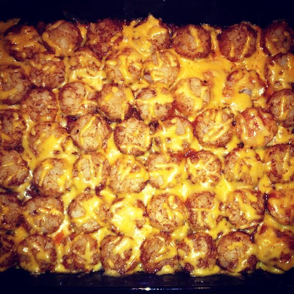

Tatertot Casserole

Description
Quick and easy casserole everyone will love.
Ingredients
- 1 pound ground of beef
- 1 pinch salt and ground black pepper to taste
- 1 (10.75) can condensed cream of mushroon soup
- 2 cups shredded Cheddar cheese
- 1 (16 ounce) package frozen tater tots
Steps
- Preheat oven to 350 degrees F (175 degrees C)
- Cook and stir ground beef in a large skillet over medium heat
until no longer pink and completely browned, 7 to 10 minutes; season with salt and black pepper.
Stir cream of mushroom soup into the cooked ground beef; pour the mixture
into a 9x13-inch baking dish. Layer tater tots evenly over the ground beef mixture;
top with cheddar cheese.
- Bake until tater tots are golden brown and hot, 30 to 40 minutes.
Recipes